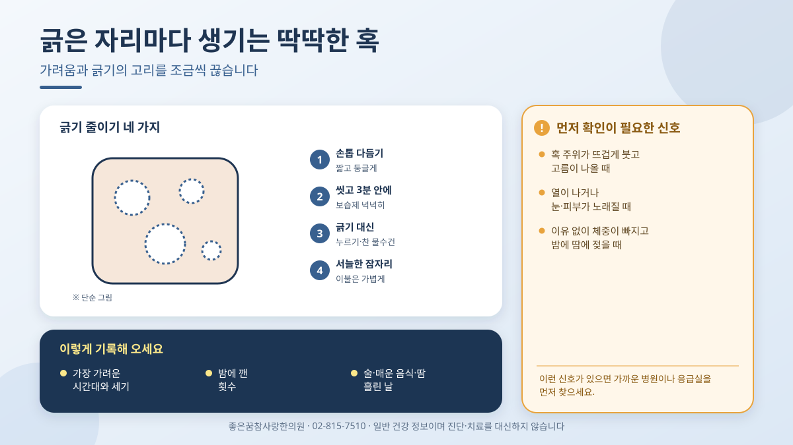

이종호 한의사 감수좋은꿈참사랑한의원 대표원장 (한의사 면허번호 19769)발행 2026-11-26 · 수정 2026-11-26
이 글의 차례
텔레비전을 보다가 무심코 정강이에 손이 갑니다. 손끝에 닿는 것은 콩알만 한 딱딱한 혹입니다. 위쪽이 거칠고 가운데에는 긁어서 생긴 딱지가 앉아 있습니다. 한 번만 긁자고 시작한 손이 멈추지 않고, 정신을 차려 보면 딱지가 떨어져 피가 맺혀 있습니다.
결절성 양진으로 오시는 분들은 가려움의 세기를 말로 표현하기 어렵다고 하십니다. 모기 물린 가려움과는 차원이 다르다고, 피가 날 때까지 긁어야 겨우 멈춘다고요. 그리고 그렇게 긁고 난 자리에 또 새로운 혹이 올라오니 끝이 보이지 않는 것 같다고 하십니다.
이 병이 힘든 이유는 가려움 그 자체보다 가려움과 긁기가 서로를 키우는 고리에 있습니다. 가려워서 긁고, 긁어서 피부가 두꺼워지고, 두꺼워진 피부 속 신경이 더 예민해져 다시 가려워집니다. 이 고리를 알고 나면 왜 연고만으로 잘 가라앉지 않았는지, 무엇부터 바꿔야 하는지가 조금 보이기 시작합니다.
이 글에서는 결절성 양진이 어떤 피부 상태인지, 왜 이렇게 오래가는지, 생활에서 긁기를 줄이는 방법과 피부과·한의원에서 함께 살피는 부분을 차근차근 정리해 보겠습니다.
결절성 양진은 어떤 피부 상태인가요
결절성 양진은 몹시 가려운 단단한 혹이 피부 여러 곳에 생기는 상태입니다. 혹은 대개 쌀알에서 콩알만 한 크기이고, 위쪽이 거칠거나 딱지가 앉아 있으며, 주변보다 색이 짙거나 붉은 경우가 많습니다.
혹은 손이 잘 닿는 자리에 많이 생깁니다. 팔과 다리의 바깥쪽, 정강이, 등의 위쪽과 어깨, 엉덩이 같은 곳입니다. 반대로 손이 잘 닿지 않는 등 한가운데는 비교적 깨끗한 경우가 많은데, 이것이 긁기와 깊은 관련이 있다는 단서가 됩니다.
혹이 생겼다가 가라앉은 자리에는 시간이 지나며 옅어지기도 하지만 색이 짙어진 자국이나 옅은 흉이 남기도 합니다. 그래서 팔다리를 드러내는 옷을 꺼리게 되었다는 분이 많습니다. 몇 달에서 몇 년씩 이어지는 경우가 흔해 오래 함께 관리한다는 마음이 필요합니다.
왜 긁은 자리에 혹이 생길까요
피부를 반복해서 긁으면 피부는 스스로를 지키려고 바깥층을 두껍게 만듭니다. 손바닥에 굳은살이 생기는 것과 비슷한 원리입니다. 그런데 이 두꺼워진 피부 속에서는 가려움을 느끼는 신경 가지가 오히려 늘어나고 예민해지는 것으로 알려져 있습니다.
그래서 처음에는 가려워서 긁었던 것이, 나중에는 긁어서 생긴 혹 자체가 가려움의 원천이 됩니다. 가려움이 신경에 새겨진 것처럼 습관이 되고, 몸은 가려움 신호를 점점 더 크게 받아들이게 됩니다. 이것이 결절성 양진이 오래가는 가장 큰 이유입니다.
처음 가려움을 시작하게 한 바탕은 사람마다 다릅니다. 진료실에서 이야기를 나눠 보면 아래와 같은 경우가 자주 겹칩니다.
- 어릴 때부터 아토피 피부염이나 건조한 피부가 있었던 경우
- 나이가 들며 피부가 건조해져 온몸이 가려워진 경우
- 콩팥, 간, 갑상선, 혈당처럼 몸속 상태가 가려움을 만드는 경우
- 벌레 물린 자리를 오래 긁은 것이 시작이 된 경우
- 큰 스트레스나 잠 부족이 이어지며 긁는 일이 잦아진 경우
몸속 상태가 가려움의 바탕이 될 수 있어서, 결절성 양진이 처음 생겼거나 갑자기 늘었다면 내과에서 혈액 검사를 한 번 받아 보시길 권합니다. 바탕을 알면 관리의 방향이 훨씬 또렷해지고, 막연한 걱정도 줄어듭니다.
사마귀나 다른 가려운 혹과는 무엇이 다를까요?
딱딱한 혹이라는 점에서 사마귀와 헷갈리는 분이 많습니다. 사마귀는 대개 가렵지 않고 표면에 작은 점들이 보이며, 손발이나 손톱 주위에 잘 생깁니다. 결절성 양진은 무엇보다 가려움이 몹시 심하고, 긁은 흔적이 함께 있다는 점이 다릅니다.
벌레 물린 자리가 부풀어 오른 것도 비슷해 보일 수 있습니다. 벌레 물린 자국은 대개 며칠에서 몇 주 사이에 가라앉지만, 결절성 양진은 몇 달씩 남아 있고 새 혹이 계속 생깁니다. 옴처럼 가족이 함께 가려워하는 피부병과도 구분이 필요해 피부과 진찰이 중요합니다.
건선이나 편평태선처럼 두꺼운 피부가 생기는 다른 피부병과도 겉모습이 비슷할 때가 있습니다. 혹의 모양이 애매하거나 연고에 잘 반응하지 않으면 피부과에서 조직 검사로 확인하기도 합니다. 정확한 이름을 아는 것이 첫걸음입니다.
가려움과 긁기의 고리를 끊는다는 것
결절성 양진 관리의 중심은 긁는 횟수를 줄이는 것입니다. 말로는 쉽지만 실제로는 가장 어려운 일이지요. 그래서 참으라고만 하기보다, 긁기를 대신할 방법을 미리 준비해 두는 것이 중요합니다.
가려울 때 손바닥으로 지그시 누르거나, 시원한 물수건을 잠깐 올리거나, 혹 위를 손가락으로 가볍게 두드리는 방법이 있습니다. 긁는 손을 다른 일로 바쁘게 만드는 것도 도움이 됩니다. 손에 쥐는 작은 공이나 뜨개질처럼 손을 쓰는 일을 곁에 두는 분도 계십니다.
처음 며칠은 긁는 횟수가 크게 줄지 않아도 괜찮습니다. 열 번 긁던 것을 여덟 번으로 줄이는 것만으로도 피부는 조금씩 숨 돌릴 틈을 얻습니다. 완벽하게 참는 것보다 조금씩 줄여 가는 것을 목표로 삼으시길 권합니다.
긁는 일은 생각보다 무의식중에 많이 일어납니다. 텔레비전을 볼 때, 휴대폰을 볼 때, 잠들기 직전, 잠결에 긁는다는 분이 많습니다. 언제 주로 긁는지 알아 두면 그 시간에 미리 손을 바쁘게 할 준비를 할 수 있습니다.
왜 밤이 되면 더 가려울까요
결절성 양진이 있는 분들 대부분이 밤에 가려움이 더 심하다고 하십니다. 낮에는 일과 사람에 신경이 쏠려 가려움이 뒤로 밀리지만, 조용한 밤에는 온 신경이 피부로 모이기 때문입니다. 이불 속에서 몸이 따뜻해지는 것도 가려움을 키웁니다.
밤에 몸의 리듬이 바뀌면서 가려움을 누르는 힘이 약해진다는 설명도 있습니다. 그래서 잠들기 전 시간을 어떻게 보내느냐가 중요합니다. 잠들기 한 시간 전에는 뜨거운 샤워 대신 미지근한 물로 씻고, 보습제를 바른 뒤 서늘한 방에서 눕는 순서를 만들어 보세요.
가려움으로 잠을 설치면 다음 날 피곤하고 예민해져 낮에도 더 긁게 됩니다. 잠과 가려움이 서로를 흔드는 또 하나의 고리이지요. 그래서 진료실에서는 가려움만큼 잠을 함께 여쭙니다.
마음의 긴장과 긁는 손
긴장하거나 화가 나거나 지루할 때 손이 피부로 가는 분이 많습니다. 긁는 것이 잠시나마 마음을 풀어 주는 역할을 하기 때문입니다. 이것은 부끄러운 일이 아니라 많은 사람이 가진 자연스러운 반응입니다.
다만 이 반응이 반복되면 피부의 고리가 더 단단해집니다. 마음이 쫓기는 날 가려움이 더 심했는지 기록해 보시고, 그런 날에는 잠깐 자리에서 일어나 걷거나 숨을 길게 내쉬는 시간을 일부러 만들어 보세요. 가려움이 오래되어 마음이 많이 지치셨다면 그 이야기도 편하게 꺼내 주셔도 됩니다.
피부과 치료와 함께 가는 법
결절성 양진은 피부과에서 바르는 연고, 혹 안에 놓는 주사, 광선 치료, 먹는 약, 최근에는 주사 치료제 등 여러 방법으로 관리합니다. 어떤 방법을 쓸지는 혹의 수와 범위, 가려움의 세기에 따라 피부과에서 정합니다.
한의원 진료는 피부과 치료를 대신하는 것이 아니라 나란히 가는 것입니다. 피부과에서 가려움과 혹을 직접 다루는 동안, 한의원에서는 잠과 땀, 열감, 소화, 마음의 긴장처럼 가려움을 키우는 몸 전체의 흐름을 함께 들여다봅니다. 두 곳의 진료가 서로 겹치지 않도록 일정도 함께 맞춥니다.
피부과 약을 드시거나 바르고 계시다면 이름과 사용 방법을 알려 주세요. 그에 맞춰 진료 방향을 정하고, 피부과 처방은 상의 없이 멈추지 않도록 안내합니다.
먼저 이렇게 여쭙니다
처음 오시면 저는 대략 이런 순서로 여쭙니다. 미리 생각해 오시면 이야기가 훨씬 수월해집니다.
- 혹은 언제부터, 몸의 어디에 생겼나요? 대략 몇 개쯤인가요?
- 가려움은 하루 중 언제 가장 심한가요? 잠을 깰 정도인가요?
- 어릴 때 아토피나 건조한 피부가 있었나요?
- 내과에서 혈액 검사를 받아 보신 적이 있나요?
- 피부과에서 쓰고 계신 연고나 약, 주사가 있나요?
- 요즘 잠, 소화, 마음의 긴장은 어떠신가요?
모든 질문에 정확히 답하지 못하셔도 괜찮습니다. 가장 가려운 시간대 하나만 기억하셔도 이야기의 실마리가 됩니다. 함께 사는 가족도 가려워하는지도 참고로 여쭙습니다.
일상에서 먼저 해 볼 수 있는 것
피부를 덜 건조하게, 덜 뜨겁게, 덜 자극받게 하는 것이 기본입니다. 아래 가운데 쉬운 것 하나부터 시작해 보세요.
- 손톱을 짧고 둥글게 다듬어 두기
- 미지근한 물로 짧게 씻고, 때를 밀거나 수건으로 문지르지 않기
- 씻은 뒤 3분 안에 보습제를 넉넉히 바르기
- 피부에 닿는 옷은 부드러운 면으로, 털옷은 직접 닿지 않게 입기
- 잠자는 방은 조금 서늘하게, 이불은 너무 두껍지 않게
- 가려울 때 쓸 찬 물수건이나 보습제를 손 닿는 곳에 두기
잠결에 긁는 분은 면장갑을 끼고 주무시거나, 혹이 많은 자리를 얇은 붕대나 긴 옷으로 덮어 두는 것도 방법입니다. 직접 손톱이 닿지 않게만 해도 아침에 새로 생긴 상처가 줄어드는 것을 느끼실 수 있습니다.
술과 맵고 뜨거운 음식, 뜨거운 사우나는 몸을 덥혀 가려움을 키우기 쉽습니다. 모두 끊으실 필요는 없지만, 먹고 난 날 가려움이 더 심했는지 기록해 보시면 내 몸에 맞는 조절 방법을 찾는 데 도움이 됩니다.
한의원에서 함께 살필 수 있는 경우
- 가려움 때문에 잠들기 어렵거나 밤에 자주 깨는 경우
- 몸에 열이 오르거나 땀이 나면 가려움이 심해지는 경우
- 피부가 전반적으로 건조하고 각질이 많은 경우
- 스트레스를 받거나 긴장하면 긁는 횟수가 늘어나는 경우
- 소화가 불편하고 대변이 고르지 않으면서 가려움이 함께 오는 경우
좋은꿈참사랑한의원에 오시면 먼저 아래 '먼저 확인이 필요한' 신호가 없는지부터 봅니다. 그다음 맥을 짚고 잠과 땀, 열감, 소화, 대소변을 여쭈며, 혹과 피부 상태를 직접 확인합니다.
진찰한 내용을 바탕으로 생활에서 바꿔 볼 것 하나와 함께 침, 한약 상담 가운데 지금 상태에 맞는 것을 정합니다. 상처가 난 혹 위에는 침을 놓지 않습니다. 한약을 상의할 때는 드시는 약을 모두 확인하고 신중하게 정합니다.
임신 중이시거나 임신을 계획하고 계시다면 진료 전에 먼저 알려 주세요. 그에 맞춰 조심스럽게 정하고, 필요하면 산부인과와 상의하시도록 안내합니다.
이렇게 기록해 오시면 상담이 쉬워집니다
가려움은 기억보다 기록이 정확합니다. 2주 정도 간단히 적어 보세요.
- 가장 가려웠던 시간대와 세기(0~10)
- 밤에 가려워서 깬 횟수
- 긁어서 피가 나거나 딱지가 떨어진 날
- 술, 매운 음식, 뜨거운 목욕, 땀을 흘린 날 표시
- 스트레스가 컸던 날 표시
- 혹이 가장 많은 자리 사진(2주에 한 번)
기록을 나란히 놓고 보면 가려움이 심했던 날과 생활 사이의 연결이 보이기 시작합니다. 휴대폰 메모든 종이 달력이든 편한 방법이면 충분하고, 빠진 날이 있어도 괜찮습니다. 그 연결 하나를 찾는 것이 다음 걸음을 정하는 실마리가 됩니다.
지치지 않고 오래 관리하기
결절성 양진은 하루아침에 가라앉는 피부 상태가 아닙니다. 혹이 줄어드는 속도보다 가려움이 조금 덜해지고, 밤에 깨는 횟수가 줄어드는 것을 먼저 느끼시는 경우가 많습니다. 그 작은 변화가 고리를 끊어 가고 있다는 신호입니다.
긁고 나서 스스로를 탓하실 필요는 없습니다. 긁는 것은 의지가 약해서가 아니라 신경이 예민해져서 생기는 일입니다. 이번 주에는 손톱 다듬기와 보습제 곁에 두기, 두 가지만 해 보세요. 다음에 오시면 2주 동안의 가려움 기록부터 함께 펼쳐 보겠습니다.
이런 증상은 먼저 확인이 필요합니다
- 혹 주위가 뜨겁게 붓고 고름이 나오면서 열이 나는 경우
- 가려움과 함께 눈이나 피부가 노래지거나 체중이 이유 없이 빠지고 밤에 땀에 젖는 경우
이런 신호가 있으면 한의원보다 가까운 병원이나 응급실을 먼저 찾으세요.
함께 읽으면 좋은 글
- 나이가 들면서 피부가 건조해지고 온몸이 가려운 노년기 피부소양증은 어떻게 살피나요?
- 부모님이 밤마다 온몸이 가렵다며 긁으실 때는 무엇을 먼저 살피나요?
- 가려움이 낮에 심한지 밤에 심한지는 왜 묻고, 어떻게 적어 두나요?
- 손가락과 발바닥에 오돌토돌 올라와 자꾸 번지는 사마귀는 어떻게 살피나요?
- 겨울이면 정강이가 하얗게 일어나고 밤에 가려울 때는 어떻게 살피나요?

여쭙는 것
- 혹은 언제부터, 몸의 어디에 생겼나요? 대략 몇 개쯤인가요?
- 가려움은 하루 중 언제 가장 심한가요? 잠을 깰 정도인가요?
- 어릴 때 아토피나 건조한 피부가 있었나요?
생활에서 해 볼 것
- 손톱을 짧고 둥글게 다듬어 두기
- 미지근한 물로 짧게 씻고, 때를 밀거나 수건으로 문지르지 않기
- 씻은 뒤 3분 안에 보습제를 넉넉히 바르기
한의원에서 함께 살필 것
- 가려움 때문에 잠들기 어렵거나 밤에 자주 깨는 경우
- 몸에 열이 오르거나 땀이 나면 가려움이 심해지는 경우
- 피부가 전반적으로 건조하고 각질이 많은 경우
먼저 확인이 필요한 신호
- 혹 주위가 뜨겁게 붓고 고름이 나오면서 열이 나는 경우
- 가려움과 함께 눈이나 피부가 노래지거나 체중이 이유 없이 빠지고 밤에 땀에 젖는 경우
한눈에 보는 표
| 구분 | 핵심 |
|---|---|
| 여쭙는 것 | 혹은 언제부터, 몸의 어디에 생겼나요? 대략 몇 개쯤인가요? 가려움은 하루 중 언제 가장 심한가요? 잠을 깰 정도인가요? |
| 생활에서 해 볼 것 | 손톱을 짧고 둥글게 다듬어 두기 미지근한 물로 짧게 씻고, 때를 밀거나 수건으로 문지르지 않기 |
| 한의원에서 함께 살필 것 | 가려움 때문에 잠들기 어렵거나 밤에 자주 깨는 경우 몸에 열이 오르거나 땀이 나면 가려움이 심해지는 경우 |
| 먼저 확인이 필요한 신호 | 혹 주위가 뜨겁게 붓고 고름이 나오면서 열이 나는 경우 가려움과 함께 눈이나 피부가 노래지거나 체중이 이유 없이 빠지고 밤에 땀에 젖는 경우 |
자주 묻는 질문
결절성 양진은 다른 사람에게 옮나요?
옮는 병은 아닙니다. 다만 가족이 함께 가려워한다면 옴처럼 옮는 피부병과 구분이 필요하니 피부과에서 확인받아 보시길 권합니다.
혹을 손톱으로 뜯어내도 되나요?
뜯으면 상처가 나고 그 자리가 다시 두꺼워지며 가려움이 커질 수 있습니다. 혹은 건드리지 말고 피부과 치료와 보습, 긁기 대신하기로 관리하시는 것이 좋습니다.
혈액 검사는 왜 받아 보라고 하나요?
콩팥, 간, 갑상선, 혈당 같은 몸속 상태가 가려움의 바탕이 되는 경우가 있기 때문입니다. 바탕을 알면 관리 방향을 정하기가 쉬워집니다.
피부과 약과 한약을 함께 먹어도 되나요?
드시는 약을 모두 확인하고 신중하게 정합니다. 약 이름을 알려 주시면 함께 살펴보고, 필요하면 피부과 선생님과 상의하시도록 안내합니다.
좋은꿈참사랑한의원은 재진 때 지난번 이야기부터 이어서 여쭙니다. 진료시간과 예약은 오시는 길에서 확인하세요.
어디서 상담받을 수 있나요?
좋은꿈참사랑한의원은 서울 동작구 만양로2길 2 신성빌딩 3층·5층(서울 동작구 상도동, 7호선 상도역 3번 출구 근처)에 있습니다. 한의사 3명(이종호 대표원장, 조영기 수석진료원장, 정원영 진료원장)이 진료합니다. 진료시간은 평일 09:30~20:00(점심 13:00~14:00), 토·일·공휴일 09:30~15:00이며, 방문 전 전화로 확인을 권합니다. 예약은 네이버 예약, 카카오톡 상담, 전화 02-815-7510로 받습니다.
이 글은 일반적인 건강 정보이며 개인의 진단이나 치료를 대신하지 않습니다. 증상이 있거나 복용 중인 약이 있다면 진료를 통해 확인하세요. 치료 효과는 개인마다 다를 수 있습니다.
작성 기준: 일반적으로 알려져 있는 건강 정보를 참고해 정리했습니다(대표원장 감수). 증상 기록은 1~2주 동안 하루 1회, 비슷한 시간에 적어 오시면 지난 상태와 비교하기 쉽습니다.